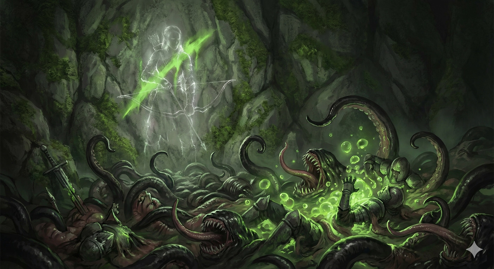

Rangers of the Mimic Predator Conclave have bonded with an unstable, shifting parasitic entity. They do not just track prey; they turn the environment itself into a weapon, throwing living traps and dissolving their enemies with corrosive biology.
3rd-Level Feature
You learn additional spells: Disguise Self (3rd), Web (5th), Meld into Stone (9th), Giant Insect (Mimic variant) (13th), Seeming (17th).
3rd-Level Feature
Bonus Action: Throw a disguised glob (Mimic Larva) up to 30 feet. The first creature to move within 5 feet must make a Dexterity Save. On a fail: 1d6 acid damage and Grappled. While grappled, they take 1d6 acid at the start of their turn. You can have PB active larvae.
7th-Level Feature
11th-Level Feature
15th-Level Feature